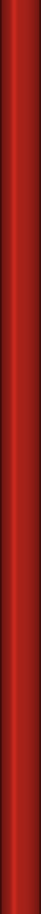

Lansquenet-sous-Tannes, Lent 1959
Chocolaterie
Fine chocolates, cocoa to drink, and small temptations
The Easter window. Admire it from the street, Monsieur le Comte.
NOTICE
During the holy season of Lent, the parish is asked to keep away from shops of indulgence.
The Comte de Reynaud, Mayor
Come in out of the north wind. Say nothing, and I will guess your favorite. Open every day, Lent included.
Vianne